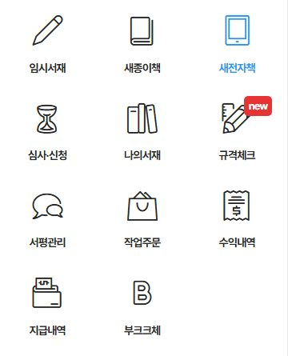
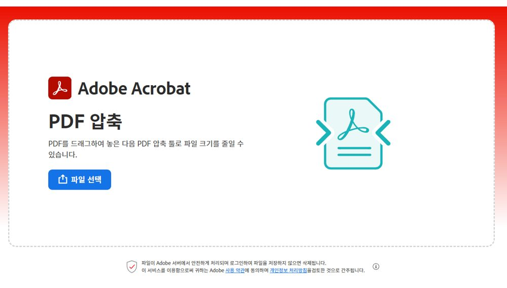
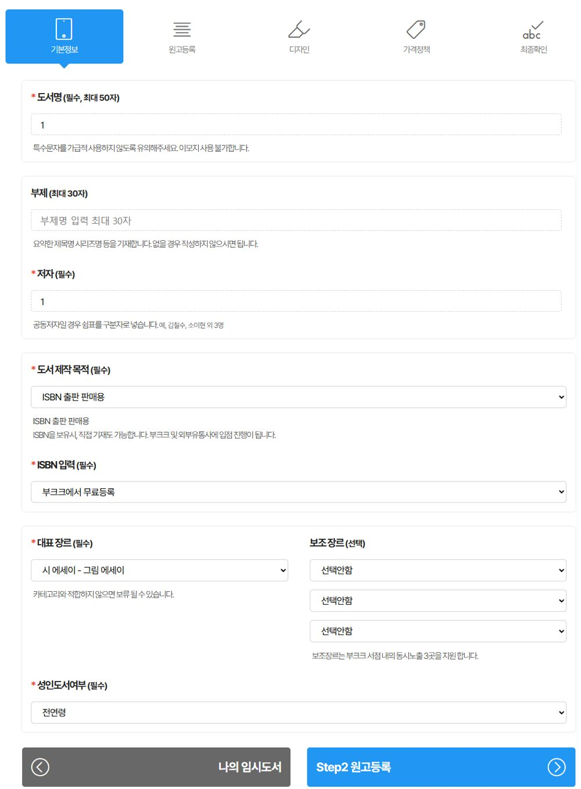
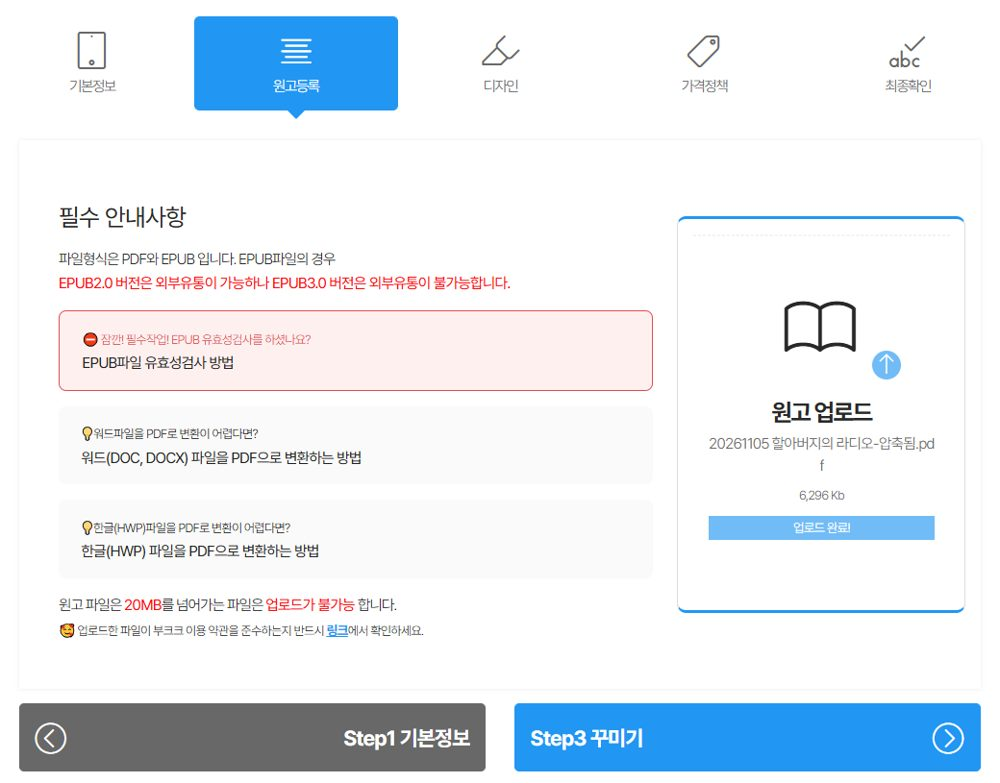
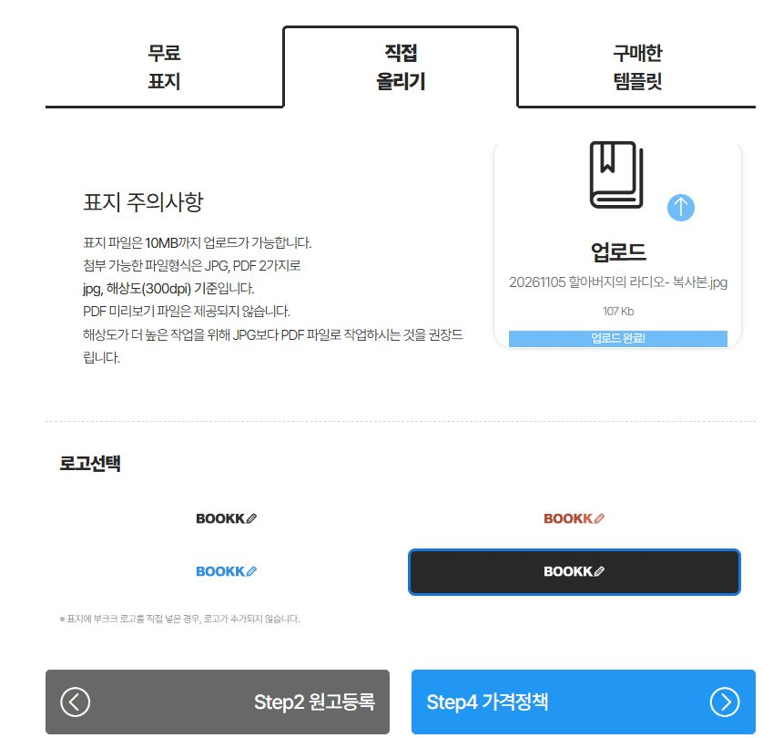
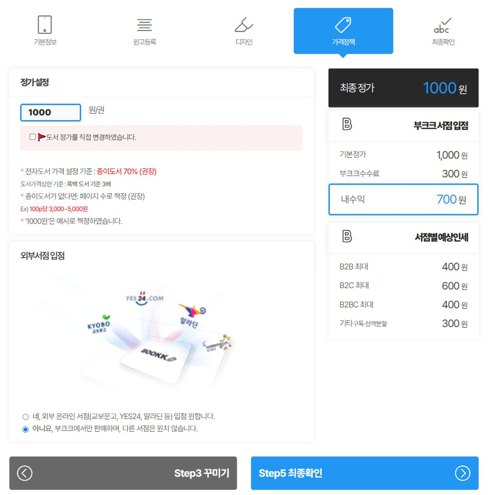
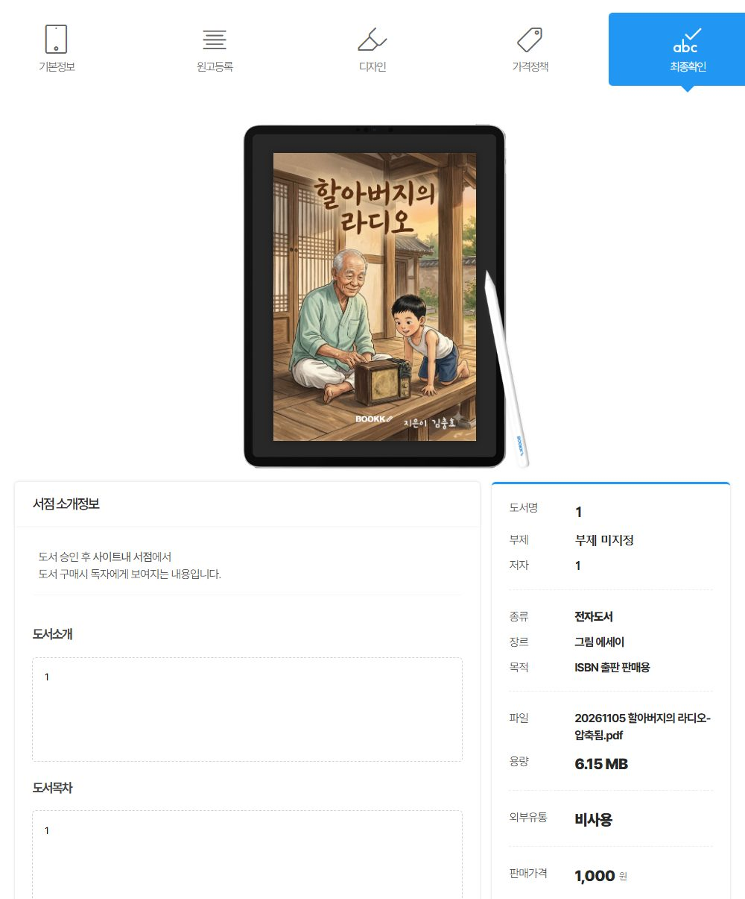
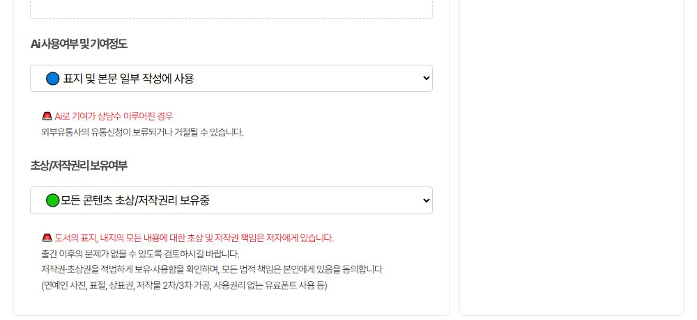
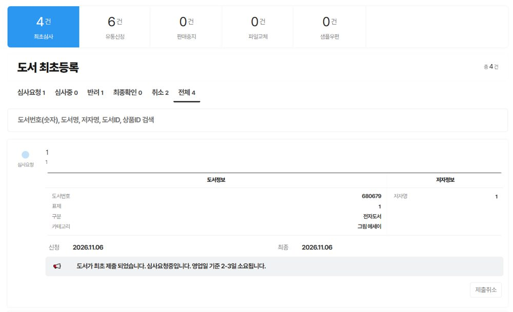

올리기 전에 챙길 것
부크크(BOOKK)는 책을 만들어 파는 출판 플랫폼이에요. 전자책은 원고 PDF 한 개 + 앞표지 그림 한 장만 있으면 올릴 수 있어요.
0-1준비물 세 가지
| 준비물 | 조건 | 어디서 |
|---|---|---|
| 원고 PDF | 20MB 이하 · PDF 또는 EPUB(우리는 PDF) | 미리캔버스에서 만든 책 전체(표지 포함 26쪽)를 PDF로 다운로드 |
| 앞표지 그림 | 10MB 이하 · JPG 또는 PDF · 300dpi(인쇄 선명도 기준) | 미리캔버스에서 1쪽(앞표지)만 JPG로 다운로드 |
| 소개 글 3개 | 도서소개 · 도서목차 · 저자경력소개 | STEP 6의 프롬프트로 책 만든 제미나이 대화창에서 |
- 부크크 도서명 = 표지 제목 = 판권(24쪽) 제목
- 부크크 저자 = 표지의 지은이 = 판권 지은이
- 하나라도 다르면 심사에서 되돌아올 수 있어요 (반려 — 고쳐서 다시 내라는 뜻)
0-2부크크 들어가기

부크크 열기 ↗ → 로그인 → 위쪽 책만들기 → 왼쪽 새전자책
위에 5칸이 보여요: 기본정보 · 원고등록 · 디자인 · 가격정책 · 최종확인. 이 교안 STEP 2~6이 그 순서 그대로예요.
중간에 멈춰도 임시서재에 남아요. 다음에 거기서 이어 하면 돼요.
- 가입이 안 돼 있으면 → 부크크 첫 화면 오른쪽 위에서 회원가입 (구글·카카오 가능)
- 「새전자책」 대신 「새종이책」을 눌렀으면 → 뒤로 가서 새전자책으로 (종이책은 표지·규격이 달라요)
- 새전자책 첫 화면 캡처
PDF 용량 20MB 이하로 맞추기
부크크는 20MB가 넘는 원고는 아예 올라가지 않아요. 그림이 많은 그림책은 넘기 쉬우니 올리기 전에 꼭 확인해요.
1-1용량 확인하기
- 윈도우: 파일에 마우스 오른쪽 → 속성 → 「크기」
- 맥: 파일 클릭 → Command + I → 「크기」
- 1MB = 1,024KB. 「6,296KB」면 약 6.1MB → 통과
| 내 PDF | 할 일 |
|---|---|
| 20MB 이하 | 그대로 STEP 2로 |
| 20MB 넘음 | 1-2 압축 → 다시 크기 확인 |
| 압축해도 20MB 넘음 | 1-3 미리캔버스에서 다시 받기 |
1-2어도비 무료 압축

- 어도비 PDF 압축 ↗ 열기
- 파일 선택 → 내 PDF 고르기
- 압축 수준은 중간 (그림이 흐려지면 「낮음」으로 다시)
- 다운로드 → 파일 이름 끝에 「-압축됨」이 붙어요
- 받은 파일 크기를 1-1처럼 다시 확인
- 압축하면 그림 화질이 조금 내려가요. PDF를 열어 표지·장면 그림이 뭉개지지 않았는지 확대해서 보기
- 뭉개졌으면 → 압축 수준을 한 단계 낮춰 다시
- 다운로드할 때 로그인을 요구하면 구글 계정으로 로그인하면 돼요
1-3그래도 크면
- 다른 무료 압축: iLovePDF 압축 ↗ (「권장 압축」)
- 미리캔버스에서 다운로드할 때 인쇄용·고화질을 골랐다면 일반 PDF로 다시 받기 — 전자책은 화면으로 보니 인쇄용 화질이 필요 없어요
- 그림 한 장이 유독 큰 경우 → 그 그림만 JPG로 다시 넣고 PDF 다시 받기
- EPUB(전자책 전용 파일 형식)으로도 올릴 수 있어요. 단 EPUB 2.0은 외부서점 유통 가능, EPUB 3.0은 외부유통 불가이고, 올리기 전에 EPUB 유효성 검사(파일 오류 검사)를 해야 해요. 그림책은 PDF가 쉬워요.
- PDF 속성 창 캡처 (크기 보이게)
기본정보
책 이름표를 다는 단계예요. 빨간 별(*)은 꼭 채워야 하는 칸이에요.

2-1칸마다 이렇게
| 칸 | 이렇게 넣어요 | 주의 |
|---|---|---|
| 도서명 * | 표지 제목 그대로 (예: 할아버지의 라디오) | 최대 50자 · 이모지 사용 불가 · 특수문자는 되도록 빼기 |
| 부제 | 비워도 돼요. 넣는다면 짧은 한 줄 | 최대 30자 |
| 저자 * | 표지·판권의 지은이와 같게 | 두 명 이상이면 쉼표로 (예: 김철수, 이영희) |
| 도서 제작 목적 * | ISBN 출판 판매용 | 판매하려면 이걸로. ISBN = 책 주민번호 같은 국제 번호 |
| ISBN 입력 * | 부크크에서 무료등록 | 내 ISBN이 따로 있을 때만 직접 기재 |
| 대표 장르 * | 시 에세이 - 그림 에세이 (우리 책 기준) | 책 내용과 안 맞으면 심사에서 보류될 수 있어요 |
| 보조 장르 | 선택 (최대 3개 — 서점에 같이 보이는 칸) | 예: 유아·어린이 쪽 분류가 있으면 하나 |
| 성인도서여부 * | 전연령 |
- 연습한다고 도서명·저자에 「1」 같은 걸 넣고 그대로 내면 그 이름으로 심사 들어가요 — 최종확인 화면에서 한 번 더 보기
- 도서명에 「」『』 같은 괄호, 이모지 넣지 않기
- 표지 제목과 도서명이 띄어쓰기까지 같은지
- 기본정보 화면 캡처
원고등록 — PDF 올리기
STEP 1에서 20MB 이하로 맞춘 PDF를 올려요.

3-1올리는 순서
- 오른쪽 원고 업로드 상자 클릭 (또는 파일을 끌어다 놓기)
- PDF 고르기
- 파일 이름 · 크기 아래 「업로드 완료」 확인
- Step3 꾸미기 버튼
- 파일 형식은 PDF 또는 EPUB
- 20MB가 넘으면 업로드 불가
- EPUB은 2.0만 외부서점 유통 가능, 3.0은 외부유통 불가
- 올린 파일이 부크크 이용약관에 맞는지 안내 링크에서 확인 (남의 사진·글 무단 사용 금지)
- 업로드가 멈추면 → 크기 다시 확인(20MB) / 파일 이름에 특수문자가 많으면 짧게 바꾸기 (예: 할아버지의라디오.pdf)
- 워드·한글 파일만 있으면 → 화면의 「PDF로 변환하는 방법」 안내 따라 PDF로 바꾸기
- 잘못 올렸으면 → 다시 업로드 상자를 눌러 새 파일로 바꾸면 돼요
- 원고 업로드 완료 화면 캡처
디자인 — 앞표지 올리기
전자책 표지는 앞표지 한 장이면 돼요 (종이책처럼 뒷표지·책등을 붙인 큰 그림이 필요 없어요).

4-1올리는 순서
- 탭 세 개 중 직접 올리기 (무료 표지·구매한 템플릿은 부크크 디자인을 쓸 때)
- 업로드 → 앞표지 JPG 고르기 → 「업로드 완료」
- 위 태블릿 그림에 내 표지가 보이는지 확인
- 로고 선택 — 표지 아래에 붙는 BOOKK 글자 색 4가지 중 하나
- Step4 가격정책
- 표지 파일은 10MB까지
- 파일 형식은 JPG 또는 PDF 두 가지
- JPG는 300dpi 기준 — 미리캔버스에서 받을 때 고화질로
- PDF로 올리면 미리보기가 안 나와요 → 확인하기 쉬운 JPG 추천
- 표지에 부크크 로고를 직접 넣었으면 로고가 따로 붙지 않아요
4-2미리캔버스에서 앞표지만 받기
- 미리캔버스 ↗에서 책 디자인 열기 → 오른쪽 위 다운로드
- 파일 형식 JPG · 고화질
- 페이지 선택에서 1쪽만 체크 → 다운로드
- 표지 아래쪽 글자(지은이 이름 등)와 BOOKK 로고가 겹치면 → 로고 색을 바꾸거나, 미리캔버스에서 이름을 조금 위로 올려 다시 받기
- 표지가 잘려 보이면 → 미리캔버스 판형이 3:4(A5 세로)인지 확인
- 디자인 화면 캡처 (표지 미리보기 보이게)
가격정책 — 정가와 서점
얼마에 팔지, 어디서 팔지 정해요. 오른쪽에 내 수익이 바로 계산돼요.

5-1정가 정하기
부크크 기준: 전자책은 종이책 값의 70% 권장 · 종이책이 없으면 쪽수로 (100쪽당 3,000~5,000원).
우리 책은 26쪽 → 100쪽 기준으로 나누면 약 800~1,300원. 연습으로는 1,000원이 무난해요.
| 정가 | 부크크 수수료(30%) | 내 수익 |
|---|---|---|
| 1,000원 | 300원 | 700원 |
| 1,500원 | 450원 | 1,050원 |
| 2,000원 | 600원 | 1,400원 |
- 처음 칸의 1000원은 부크크가 넣어 둔 예시예요
- 값을 바꿨으면 아래 「도서 정가를 직접 변경하였습니다」에 꼭 체크
- 전자책 정가 상한은 흑백 종이책 값의 3배까지
5-2외부서점 입점
| 선택 | 뜻 | 이럴 때 |
|---|---|---|
| 네 | 교보문고·YES24·알라딘 등 외부 온라인 서점에도 판매 | 많이 알리고 싶을 때 (단, STEP 6의 AI 사용 안내 참고) |
| 아니요 | 부크크 서점에서만 판매 | 첫 책 연습 · 가족·지인에게 링크로 나눌 때 |
- 오른쪽 「서점별 예상인세」는 외부서점에서 팔릴 때 내 몫이에요 (서점마다 달라요)
- 나중에 가격을 바꾸고 싶으면 → 판매 시작 뒤 나의서재에서 수정 요청
- 가격정책 화면 캡처
최종확인 — 소개 글 · AI · 저작권
서점에 보일 소개 글 세 개를 넣고, AI 사용과 저작권을 사실대로 고른 뒤 제출해요.

6-1오른쪽 요약부터 확인
- 도서명 · 저자 — 「1」 같은 연습 값이 아닌가?
- 종류 전자도서 · 목적 ISBN 출판 판매용
- 파일 이름이 최종본인가? 용량 20MB 이하?
- 외부유통 · 판매가격
틀린 게 있으면 위쪽 5칸(기본정보 …)을 눌러 돌아가 고쳐요.
6-2소개 글 세 칸 — 책 만든 대화창에서
그림책을 만든 그 제미나이 대화창 맨 아래에 보내요. 앞 내용을 알고 있어서 따로 붙일 게 없어요. 결과 코드 블록을 복사해 부크크 칸에 붙여요.
[목표] 이 대화에서 만든 그림책을 부크크 서점에 올리려고 해. 서점의 「도서소개」 칸에 넣을 글을 써 줘. [읽는 사람] 이 책을 사거나 선물하려는 사람(부모·조부모·지인)이 서점 화면에서 읽어. [내용] ① 어떤 이야기인지 2문장 ② 누구에게 들려주면 좋은지 1문장 ③ 책 모양 1문장 — [쪽수 — 예: 표지 포함 26쪽] 그림책, 펼치면 왼쪽 그림·오른쪽 글. [지킬 것] 이 대화에 없는 내용은 지어내지 마. "최고의", "감동 보장" 같은 과장 광고 말은 쓰지 마. 300~500자. [결과 모양] 코드 블록 하나.
목차 앞속표지 1. [장면 1 제목] 2. [장면 2 제목] 3. [장면 3 제목] 4. [장면 4 제목] 5. [장면 5 제목] 6. [장면 6 제목] 7. [장면 7 제목] 8. [장면 8 제목] 9. [장면 9 제목] 10. [장면 10 제목] 맺는 글
[목표] 부크크 「저자경력소개」 칸에 넣을 저자 소개를 써 줘. [내가 알려 주는 것 — 이것만 써] · 이름(또는 필명): [이름] · 하는 일이나 살아온 일: [한두 줄 — 예: 30년 동안 초등학교에서 아이들을 가르쳤다] · 이 책을 만든 까닭: [한 줄 — 예: 손녀에게 할아버지 이야기를 남겨 주고 싶어서] [지킬 것] 내가 말하지 않은 경력·상은 지어내지 마. 자랑하는 말투 말고 담백하게. 3~4문장. [결과 모양] 코드 블록 하나.
6-3AI 사용 여부 · 초상/저작권

| 칸 | 어떻게 | 알아 둘 것 |
|---|---|---|
| AI 사용여부 및 기여도 | 목록을 열어 내 책에 맞는 것을 사실대로 (예: 「표지 및 본문 일부 작성에 사용」) | AI 기여가 상당하면 외부서점 유통 신청이 보류·거절될 수 있어요. 부크크 서점 판매는 그대로 |
| 초상/저작권리 보유여부 | 모든 콘텐츠 초상/저작권리 보유중 | 표지·본문의 모든 책임은 저자에게 있어요 |
- 연예인·남의 사진
- 남의 상표·로고, 다른 책·만화 캐릭터
- 남의 글·그림을 2차·3차 가공한 것
- 쓸 권리가 없는 유료 글꼴
- 우리 책은 내 이야기 + 내가 만든 AI 그림 + 미리캔버스 글꼴이라 괜찮아요. 가족 사진을 넣었다면 그 가족의 허락을 받아요
- 다 맞으면 도서제출
- 제출하면 심사 목록에 「심사요청」으로 올라가요 → STEP 7
- 도서소개 끝에 「이렇게 읽어 주세요」 한 줄을 넣으면 좋아요 — 예: 「장면마다 아이에게 “너라면 어땠을까?” 하고 물어봐 주세요」
- 목차 칸은 서점에 그대로 보여요. 쪽 번호는 빼는 게 깔끔해요
- 최종확인 화면 캡처 (소개 글 들어간 상태)
- 제미나이가 써 준 도서소개
심사 · 판매 · 수익 받기
제출하면 부크크가 책을 확인해요. 통과하면 서점에 올라가고, 팔린 돈을 받으려면 계좌를 등록해요.

7-1심사 상태 보기
- 왼쪽 메뉴 심사·신청 → 「도서 최초등록」
- 심사요청 → 심사중 → 최종확인 순서로 바뀌어요
- 보통 영업일 기준 2~3일 (주말·공휴일 빼고)
- 제출을 되돌리려면 오른쪽 아래 제출취소
7-2반려되면
| 자주 나오는 이유 | 고치는 법 |
|---|---|
| 도서명·저자가 표지·판권과 다름 | 셋을 똑같이 맞추고 다시 제출 |
| 장르가 내용과 안 맞음 | 대표 장르를 그림 에세이 등 맞는 것으로 |
| 파일 문제 (쪽 빠짐·흐림) | PDF 다시 확인 → 다시 업로드 |
| 저작권이 걱정되는 이미지·글꼴 | 그 요소를 빼고 다시 |
반려 사유는 심사 목록과 알림(종 모양)에서 볼 수 있어요. 사유대로 고쳐 다시 내면 돼요.
7-3ISBN과 판권
- 「부크크에서 무료등록」은 심사 뒤에 ISBN 번호가 나와요
- 처음 올릴 땐 판권의 ISBN 줄을 빼고 올려요
- 번호를 판권에 넣고 싶으면 → 번호를 받은 뒤 PDF를 고쳐 심사·신청의 파일교체로 다시 올려요
7-4수익 받기 — 계정인증 · 계좌등록
- 왼쪽 메뉴 수익내역 → 위쪽 인증관리(본인 인증)와 계좌관리(내 통장)를 둘 다 해야 지급돼요
- 최소 인출금을 10원으로 설정해 두면 적은 금액도 받을 수 있어요 (안 바꾸면 예전 기준 그대로)
- 부크크 판매분은 다음 달, 외부서점 판매분은 두 달 뒤에 정산돼요
- 계좌번호·주민번호 같은 건 본인이 직접 입력해요 — 남에게 대신 시키지 않기
- 판매가 시작되면 부크크 서점에서 내 책 주소를 복사해 가족 단톡방·SNS에 나눠요
- 같은 원고로 새종이책을 만들면 종이책도 낼 수 있어요 (표지는 앞·책등·뒤를 붙인 큰 그림이 따로 필요해요)
- 심사 목록 캡처 (내 책 보이게)
- 판매 시작되면 서점의 내 책 화면 캡처
올리기 전 한 장 점검표
제출 버튼 누르기 전에 이 표만 보고 하나씩 체크해요.
✓점검표
| 항목 | 확인할 것 | 어디 |
|---|---|---|
| 20MB 이하 · 26쪽 순서 맞음 · 압축했다면 그림 확인 | STEP 1 | |
| 도서명·저자 | 표지 = 판권 = 부크크 칸 (연습 값 「1」 없음) | STEP 2 |
| 목적·ISBN | ISBN 출판 판매용 · 부크크에서 무료등록 | STEP 2 |
| 장르 | 시 에세이 - 그림 에세이 · 전연령 | STEP 2 |
| 원고 | 「업로드 완료」 · 최종 파일 이름 | STEP 3 |
| 표지 | JPG 10MB 이하 · 직접 올리기 · 로고 색 | STEP 4 |
| 가격 | 정가 · 바꿨으면 체크박스 · 외부서점 네/아니요 | STEP 5 |
| 소개 글 | 도서소개 · 목차 · 저자소개 | STEP 6 |
| AI·저작권 | AI 사용 사실대로 · 남의 사진·로고·유료 글꼴 없음 | STEP 6 |
| 판권 | ISBN 줄은 처음엔 빼기 | STEP 7 |
| 수익 | 인증관리 · 계좌관리 · 최소 인출금 10원 | STEP 7 |
- 심사요청 화면 캡처 — 오늘의 마지막 올리기